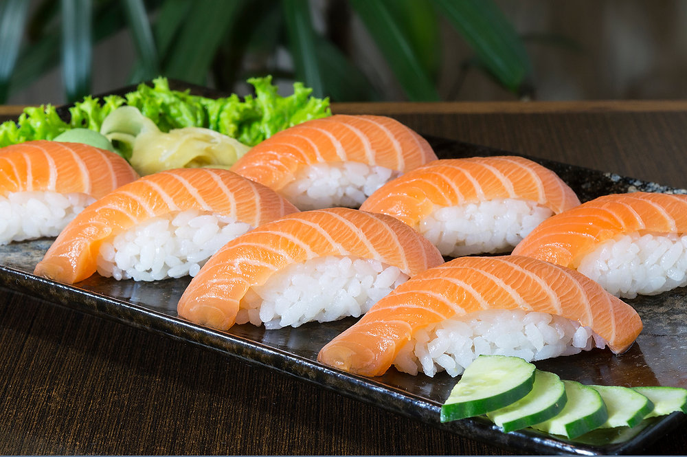

Bem-vindo ao Restaurante Japonês Sabor do Oriente, onde você pode desfrutar da autêntica culinária japonesa.

Sushi: Uma Delícia Japonesa Sushi é uma das iguarias mais conhecidas e apreciadas da culinária japonesa. Com suas origens ancestrais nas técnicas de conservação de peixe no sudeste asiático, o sushi evoluiu ao longo dos séculos para se tornar uma arte culinária refinada e uma experiência gastronômica única. O sushi tradicional consiste em arroz temperado com vinagre de arroz, combinado com uma variedade de ingredientes frescos, como peixe cru, frutos do mar, vegetais e até mesmo omelete doce. Uma das características mais marcantes do sushi é a sua apresentação cuidadosa e artística, que reflete a estética japonesa de simplicidade e harmonia.
| Dia da Semana | Horário |
|---|---|
| Segunda-feira à Quinta-feira | 18:00 - 22:00 |
| Sexta-feira e Sábado | 18:00 - 23:00 |
| Domingo | Fechado |